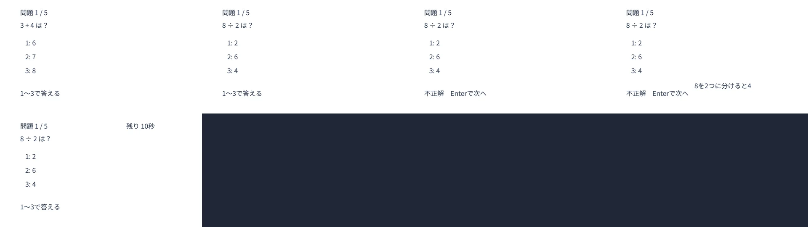
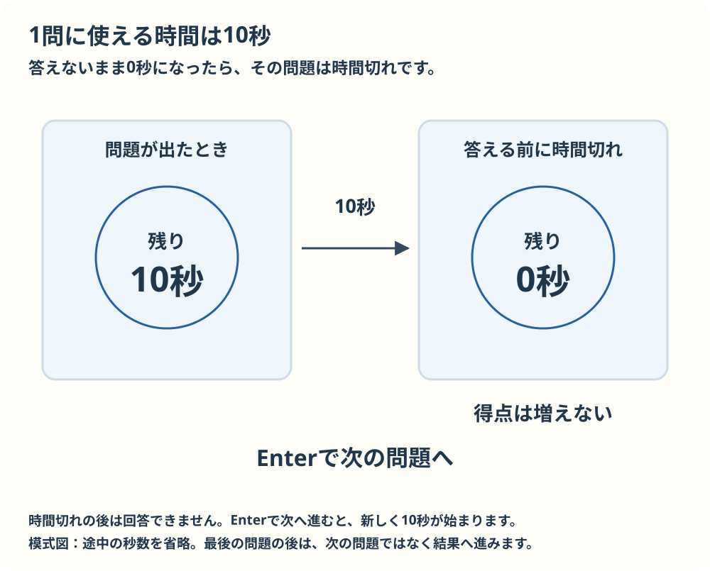

3択クイズの発展
始める前に
基本編の完成版から始めます。ZIPを展開してできたフォルダーでindex.htmlを開きます。ZIPには基本編の3ファイルが入っています。
WindowsでZIPを展開する（動画）
各段階の変更を上から順に加え、保存したら index.html を開くか再読み込みします。
ステップ 1：出題順を混ぜる
このステップの見本を図で見る

このステップの見本
この行を足す前 変わったコードの一例（script.js）
const j = Math.floor(Math.random() * (i + 1));
見本で確かめること
Rで数回再開すると、問題の順番が変わることがあります。
目標
5問の順番を始めるたびに混ぜます。
確認欄までは準備中です。作業を順に進め、確認欄で保存して動作を確かめます。
書く場所と置き換えるコード
コピーした問題を混ぜる
作業用フォルダーの script.js で、次の目印を探し、その直後に書きます。
目印
index = 0; score = 0; state = "answer"; message = "";
書き足すコード
for (let i = order.length - 1; i > 0; i--) {
const j = Math.floor(Math.random() * (i + 1));
[order[i], order[j]] = [order[j], order[i]];
}
i は最後の番号から1ずつ減ります。Math.random() と Math.floor() で0から i までの番号 j を選び、分割代入で2つの問題を交換します。order はコピーなので元の並びは変わらず、5問を1回ずつ出します。

図は神経衰弱のカードを一時保存して交換する例です。クイズではコピーした5問を i が4から順に混ぜ、[order[i], order[j]] = [order[j], order[i]] という分割代入で2つを交換します。交換した後ろ側を次の候補から外す流れは同じです。
保存後の確かめ方
保存してゲーム画面を更新する（動画）
index.html を再読み込みします。Rで数回再開すると、問題の順番が変わることがあります。 この段階の見本を開く
小さな練習
表示や時間を少し変えて試します。 練習後はコードを元に戻してください。
ステップ 2：答えの解説を出す
このステップの見本を図で見る
このステップの見本
この行を足す前 変わったコードの一例（script.js）
if (state === "feedback") ctx.fillText(q.explanation, 350, 350);
見本で確かめること
答えた後に、その問題の計算の説明が表示されます。
目標
答えた後に計算の説明を出します。
確認欄までは準備中です。作業を順に進め、確認欄で保存して動作を確かめます。
書く場所と置き換えるコード
回答後に解説を表示する
作業用フォルダーの script.js で、次の目印を探し、その直後に書きます。
目印
ctx.fillText(state === "answer" ? "1〜3で答える" : message + " Enterで次へ", 80, 380);
書き足すコード
if (state === "feedback") ctx.fillText(q.explanation, 350, 350);
state が "feedback" のとき、今の問題の explanation を座標 (350, 350) に描きます。
保存後の確かめ方
答えた後に、その問題の計算の説明が表示されます。 この段階の見本を開く
小さな練習
表示や時間を少し変えて試します。 練習後はコードを元に戻してください。
ステップ 3：1問ごとの時間制限
このステップの見本を図で見る
このステップの見本
この行を足す前 変わったコードの一例（script.js）
if (state === "answer") ctx.fillText("残り " + Math.max(0, Math.ceil((deadline - performance.now()) / 1000)) + "秒", 500, 60);
見本で確かめること
10秒答えずに待つと時間切れになり、Enterで次の問題へ進みます。
目標
各問10秒以内に答えます。
確認欄までは準備中です。作業を順に進め、確認欄で保存して動作を確かめます。
書く場所と置き換えるコード
締切を覚える
作業用フォルダーの script.js で、次の範囲を探して置き換えます。
置き換える範囲
let order, index, score, state, message;
置き換えるコード
let order, index, score, state, message, deadline;
deadline は今の問題の回答を受け付ける締切です。

問題が出ると、その問題の残り時間は10秒です。答えないまま0秒になると時間切れになり、点は増えません。Enterで次の問題へ進むと、また10秒から始まります。
途中の秒数を省略した模式図です。最後の問題の後は結果へ進むことを注記しています。
最初の締切を設定する
作業用フォルダーの script.js で、次の目印を探し、その直後に書きます。
目印
[order[i], order[j]] = [order[j], order[i]];
}
書き足すコード
deadline = performance.now() + 10000;
performance.now() はミリ秒の時刻です。10000を足すと10秒後になります。
更新時に締切を確認する
作業用フォルダーの script.js で、次の範囲を探して置き換えます。
置き換える範囲
function update() {
置き換えるコード
function update() {
if (state === "answer" && performance.now() >= deadline) {
state = "feedback"; message = "時間切れ";
}
回答中で現在時刻が締切以上なら、回答後の "feedback" に変えて時間切れを知らせます。この処理では得点を増やしません。
残り時間を表示する
作業用フォルダーの script.js で、次の目印を探し、その直後に書きます。
目印
if (state === "feedback") ctx.fillText(q.explanation, 350, 350);
書き足すコード
if (state === "answer") ctx.fillText("残り " + Math.max(0, Math.ceil((deadline - performance.now()) / 1000)) + "秒", 500, 60);
残りミリ秒を1000で割り、Math.ceil() で切り上げます。Math.max() で0より小さくしません。
締切後の回答を受け付けない
作業用フォルダーの script.js で、次の目印を探し、その直後に書きます。
目印
if (event.key.toLowerCase() === "r") { start(); return; }
書き足すコード
if (state === "answer" && performance.now() >= deadline) { state = "feedback"; message = "時間切れ"; return; }
入力時にも締切を調べ、期限を過ぎたら時間切れにして処理を終えます。
次の問題の締切を設定する
作業用フォルダーの script.js で、次の範囲を探して置き換えます。
置き換える範囲
else { state = "answer"; message = ""; }
置き換えるコード
else { state = "answer"; message = ""; deadline = performance.now() + 10000; }
次の問題へ進むとき、現在時刻から10秒後に締切を設定します。
保存後の確かめ方
10秒答えずに待つと時間切れになり、Enterで次の問題へ進みます。 この段階の見本を開く
小さな練習
表示や時間を少し変えて試します。 練習後はコードを元に戻してください。